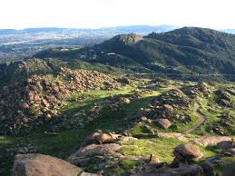

The Santa Susana Mountains
The Santa Susana Mountains are a transverse range of mountains in Southern California, north of the city of Los Angeles, in the United States. The range runs east-west, separating the San Fernando and Simi valleys on its south from the Santa Clara River Valley to the north and the Santa Clarita Valley to the northeast. The Oxnard Plain is to the west of the Santa Susana Mountains.
Notable landmarks: The Old Santa Susana Stage Road, or Santa Susana Wagon Road, is a route taken by early travelers between the San Fernando Valley and Simi Valley near Chatsworth, California, via the Santa Susana Pass. It was an important artery linking the Los Angeles Basin and inland Ventura County and as such, was part of the main route for travel by stagecoach between Los Angeles and San Francisco from 1861 until the opening of rail traffic between the cities in 1876. The Old Santa Susana Stage Road is listed on the National Register of Historic Places.
Popular Santa Susana Mountains trails
Authors Favorites:
Hummingbird Loop:The Hummingbird Loops is considered a challenging route with 1200ft of elevation gain. It starts on the Hummingbird trail then connects to the Grudge trail. It also features a side trip to the Secret Spot aka The Swing. A cave with a few swings and climbing ropes attached to the roof. Once you complete the Grudge you will loop back around to the Hummingbird trail to complete this 3.8 mile loop trail.
Rocky Peak Trail to Las Llajas Canyon Trail:Rocky Peak Trail to Las Llajas Canyon Trail stretches from the 118 freeway to deep into the Santa Susana Mountains. It's a 13mi out and back that takes roughly 7 hours to complete on foot or 3.5 on bike. It features stunning scenery and beautiful solitude on the back half of the trail. If you go off to the right at the 5 mile mark you are able to summit Rocky Peak and can see a beautiful view of both Simi and San Fernando valley.
Oat Mountain Summit:This 6.6-mile out-and-back trail near Chatsworth, California, is a medium difficulty route with 1,978ft elevation gain that takes an average of 3 h 58. This trail is mostly paved and happens to take you through the middle of the remnants of the LA-88 Nike air defense base.